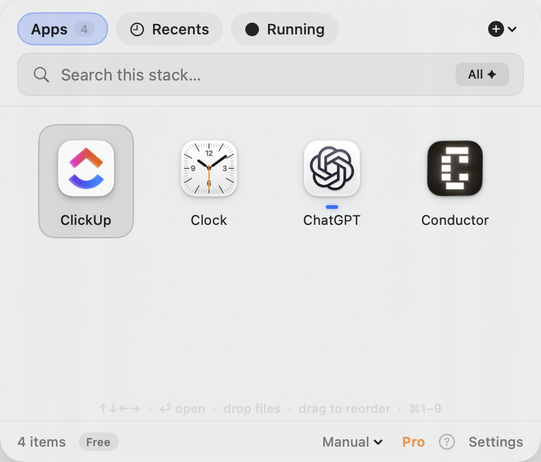
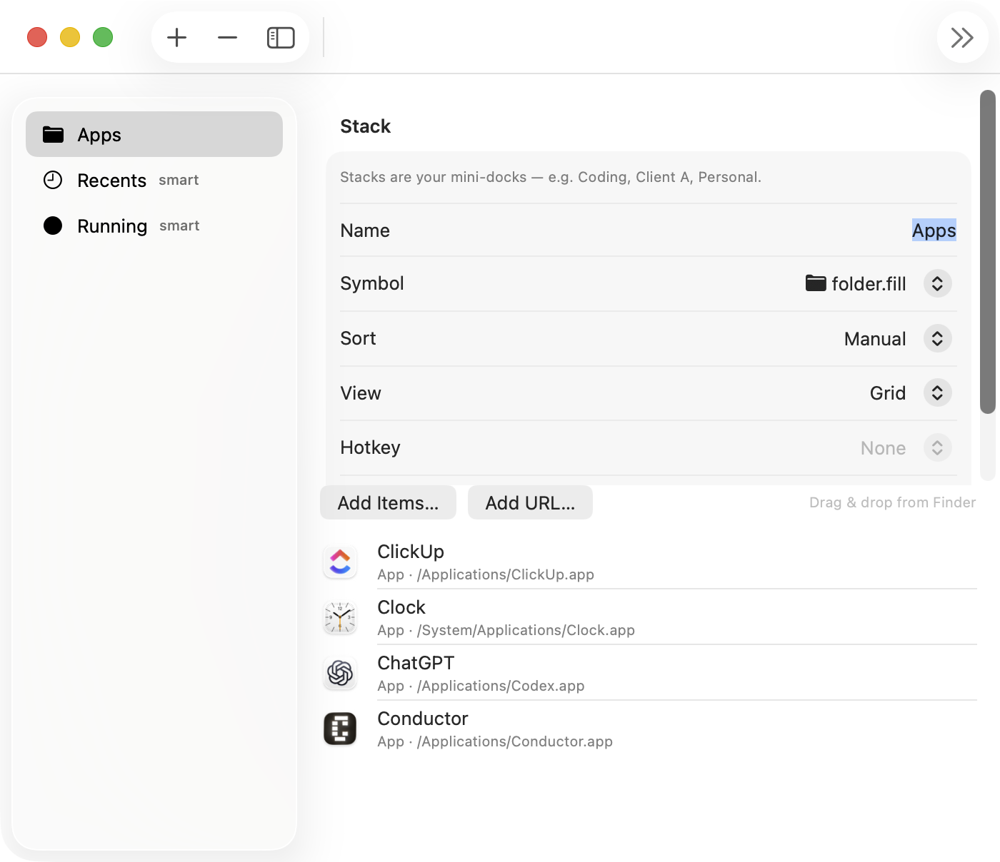

Scan → miss → scan again
A flat Dock has no context
Work tools sit next to games. Client apps sit next to personal chat. Your brain has to re-sort the same row every time you switch modes.
Twenty tools. Six projects. Endless tabs. The Dock becomes a crowded shelf you re-scan a hundred times a day. ClutterDock turns what you open into calm, named stacks — apps, files, folders, and links — launched with one hotkey. Your system Dock stays. The chaos doesn’t.
The quiet tax
Every extra icon is a tiny decision. Over a year, tiny decisions become hours of hunting, mis-clicks, and “where did I put that?”
Scan → miss → scan again
Work tools sit next to games. Client apps sit next to personal chat. Your brain has to re-sort the same row every time you switch modes.
Apps + files + links
You open a project folder, a brief, a dashboard URL, and three tools together. The Dock only wants icons — so the rest of the job scatters across Finder, browser, and sticky notes.
Pin everything or nothing
Pin twenty things and the Dock becomes noise. Pin almost nothing and you live in Spotlight and Start. Neither matches how focused people actually work: a few contexts, used hard, every day.
macOS can put a Finder folder on the Dock. That’s useful — and limited. You don’t get mixed apps + files + URLs as a first-class stack, cross-stack search, workspaces for home vs work, or the same idea on Windows tray without duct tape. Full Dock replacements exist too — but they ask you to abandon the Dock you already know.
ClutterDock is for people who want order, not a new operating system skin.
The ClutterDock idea
Group by how you work — not by how the OS forces you to pin.
Crowded Dock
Everything competes. Nothing is grouped by job.
Named stacks
Work · Creative · Client · Recents — on demand.
Conceptual illustration — not a product screenshot.


Drop apps, project folders, documents, and URLs into the same stack. Open the context — not a scavenger hunt across five surfaces.
Global hotkey (⌘⇧D on Mac, Ctrl+Shift+D on Windows). Grid or list. Keyboard through items. Back to work in seconds.
One ClutterDock presence instead of twenty “maybe later” pins. Favorites can stay on the Dock; everything else lives in stacks.
No account wall. Stacks live on your machine. Organize your day without shipping your app list to the cloud.
Why people need this
Client work, then admin, then personal. Flat icon rows don’t match mode-switching. Stacks do.
Not just apps — folders, PDFs, dashboards, tickets. ClutterDock treats them as one launch surface.
Dock replacements change muscle memory. ClutterDock adds power without ripping out the Dock.
Free forever for daily stacks. Pro is planned as a one-time unlock — not rent on your own organization.
Positioning
Plenty of tools redecorate the Dock or fence the desktop. ClutterDock does neither.
| Typical Dock replacement | Desktop icon organizers | ClutterDock | |
|---|---|---|---|
| Keeps system Dock | Usually no | N/A (desktop) | Yes — by design |
| Apps + files + folders + URLs | Varies | Mostly desktop icons | First-class stacks |
| Mac + Windows | Often one OS | Often one OS | Both |
| Account required | Sometimes | Sometimes | Never |
| Pricing model | Often paid / suite | Often paid / sub | Free core · one-time Pro |
Comparison is categorical, not a review of any single product. ClutterDock’s job is launch context — not window previews, not desktop wallpaper organization.
In practice
Work, Creative, Client, Admin — whatever matches your day. A few stacks beat twenty pins.
Apps, folders, files, and URLs that belong together. The full job in one place.
Open ClutterDock, pick the stack, launch. The Dock stays clean; your speed stays high.
Capabilities
Grid or list, drag reorder, sort modes, running indicators — stable public APIs only.
Files, folders, and URLs live next to the tools you open them with.
Global hotkey, arrows, shortcuts. Pro adds search-all and per-folder hotkeys.
Recents from what you launched. Running for what’s live. Less manual tidy-up.
Switch whole sets of stacks for home vs work without rebuilding the Dock.
Native Swift on macOS 14+. Tray launcher on Windows 10/11. Same idea, native feel.
Principles
No private Dock hacks. No replacement required. Stability over spectacle.
Local-first. No account to start. Your stacks are yours.
Free forever for daily use. Pro is optional and one-time — not a leash.
Pricing philosophy
Enough free stacks for real daily work. Pro unlocks unlimited folders, workspaces, themes, and pack export — planned as a single purchase on Mac and Windows.
Public beta
Free forever core. Builds are unsigned beta — first launch needs an extra click on Mac (Gatekeeper) and Windows (SmartScreen). See the install guide.
Native Swift · universal (Apple Silicon + Intel) · v1.4.7
Download Mac zipUnzip → Applications → right-click → Open the first time.
Tray launcher · installer / portable · v1.2.1
Download Windows exeIf SmartScreen appears: More info → Run anyway.
All assets and checksums: GitHub Releases · Help: Install FAQ · Bugs: Issues